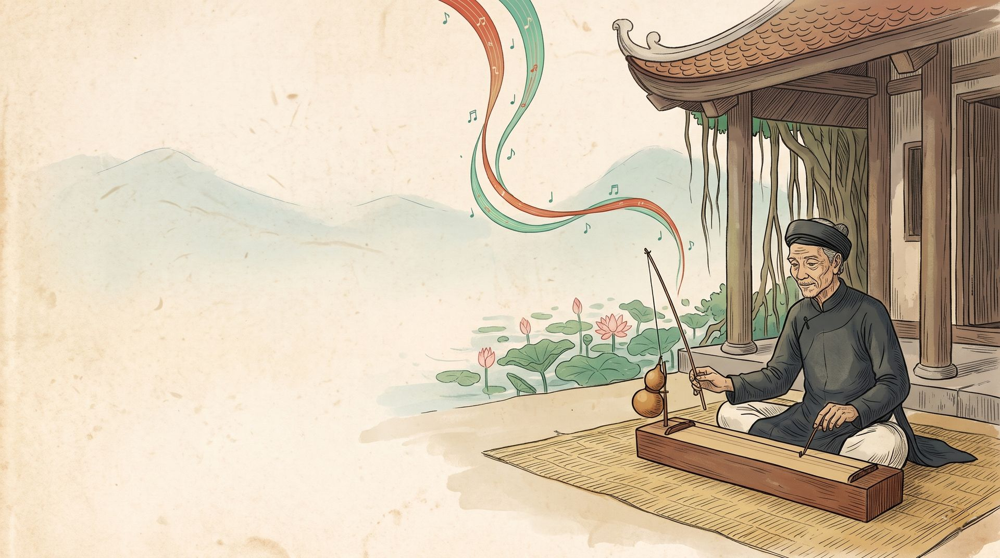
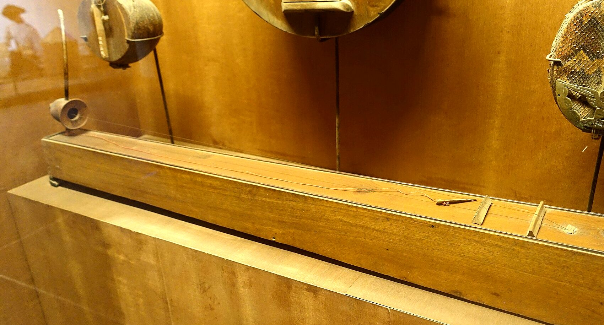
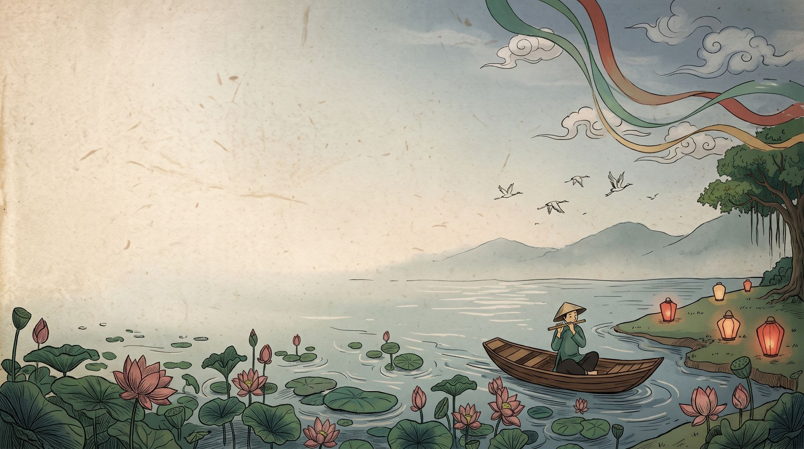

Ngũ Âm
“The five tones” of Vietnamese music: hò, xự, xang, xê, cống.
Seen a Vietnamese instrument and don't know its name? Hear it, play it and learn its story.
or press Enter, or scroll down
Touch a ribbon to hear the five tones, or press keys 1 to 5
What instrument is that?
Show Ngũ Âm a picture. It names the instrument, lets you play it and tells you its story.

Today: the đàn bầu
Monochord · say it “dahn bow”
One string, one wooden box and a flexible rod. The player touches the string lightly at its harmonic points and bends the rod, so a single string can glide, sigh and sing like a human voice.



Take it on your phone
Scan the code to open the phone version: pluck the đàn tranh with several fingers at once, and tilt the phone to bend the đàn bầu.
The phone version lets you pluck the đàn tranh with several fingers at once, and tilt the phone to bend the đàn bầu.